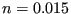

The sluice gate is the upstream element of a pair of boundary elements
simulating a sluice. The downstream element is the sluice opening. Both are
illustrated in Figure 123. The interesting point is that the gate
height  may be part of the backwater curve, but it does not have to. If
the lower point of the gate is higher than the fluid surface, it will not be
part of the backwater curve.
may be part of the backwater curve, but it does not have to. If
the lower point of the gate is higher than the fluid surface, it will not be
part of the backwater curve.
If the gate door touches the water and the water curve is a frontwater curve
(curve A in Figure 123) the volumetric flow  is given by
is given by
 |
(137) |
if the gate door does not touch the water and the water curve is a frontwater curve
the volumetric flow  is given by
is given by
 |
(138) |
where  is the critical depth. If the gate door touches the water and the water curve is a backwater curve (governed by downstream boundary conditions, curve B in Figure 123)) the volumetric flow is given by
 |
(139) |
Finally, if the gate door does not touch the water and the water curve is a backwater curve the volumetric flow is given by
| (140) |
The following constants have to be specified on the line beneath the *FLUID SECTION,TYPE=CHANNEL SLUICE GATE card:
The slope  is used in case the gate door does not touch the water
surface. The cross section of a sluice gate is supposed to be
rectangular. Therefore,
is used in case the gate door does not touch the water
surface. The cross section of a sluice gate is supposed to be
rectangular. Therefore,  is lacking in its definition. Notice that a sluice gate can have upstream channel elements attached
to it. In that case it is mandatory to specify an upstream reference element.
is lacking in its definition. Notice that a sluice gate can have upstream channel elements attached
to it. In that case it is mandatory to specify an upstream reference element.
Example files: channel1, chanson1.